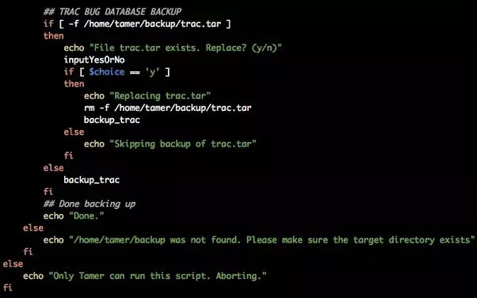

¿Quién soy?
Mi nombre es Samuel Sánchez Díaz soy un estudiante de primero de ASIR (Administración de Sistemas Informáticos en Red). He estudiado con anterioridad el ciclo de grado medio de SMR (Sistemas Microinformáticos y Redes). Mi objetivo es seguir formandome y hacer uns especialización en Ciberseguridad en el centro IES El Cañaveral, para poder trabajar en el futuro como hacker ético.
Proyectos
Durante mi trayectoria he podido haccer una gran cantidad de proyectos a continuación dejo algunos de ellos:

Creación de tetris desde cero hecho completamente com HTML y Javascript
Creación de diversos servidores utilizando la herramienta docker para su mejor gestión ailamiento y
seguridad.

Creación de diversos scripts echos con bash para la automatización de copias de seguridad, borrados
de carpetas cada cierto tiempo, etc.
Habilidades
Ciberseguridad


Sistemas operativos